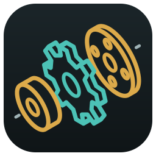
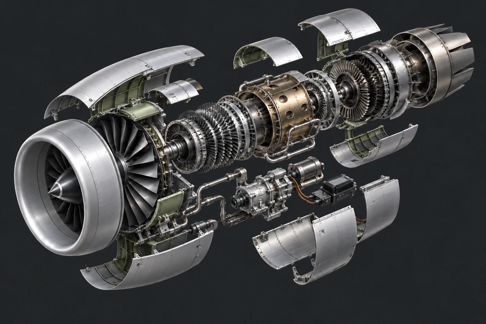
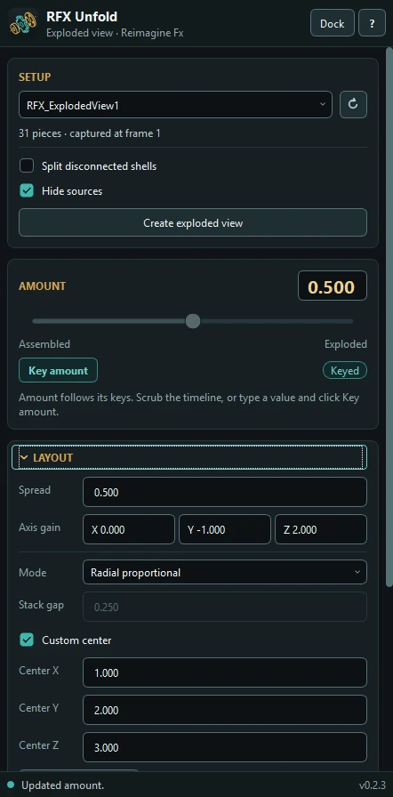
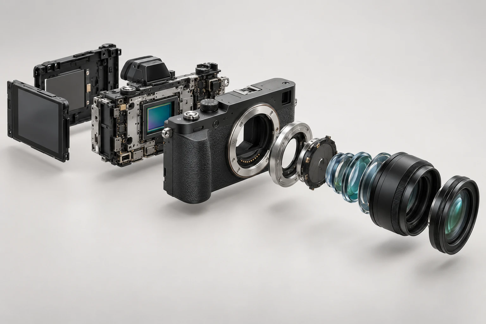
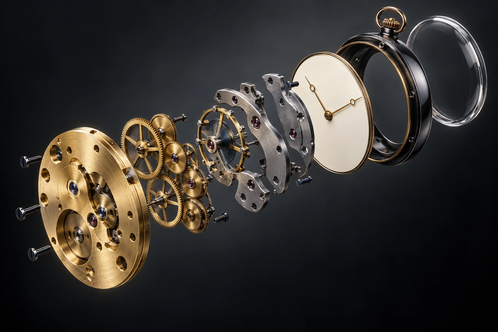
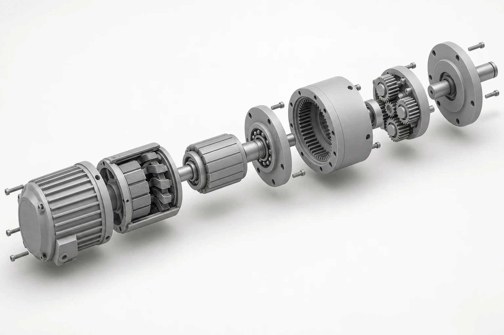
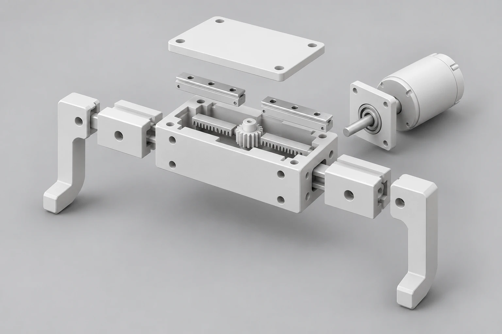
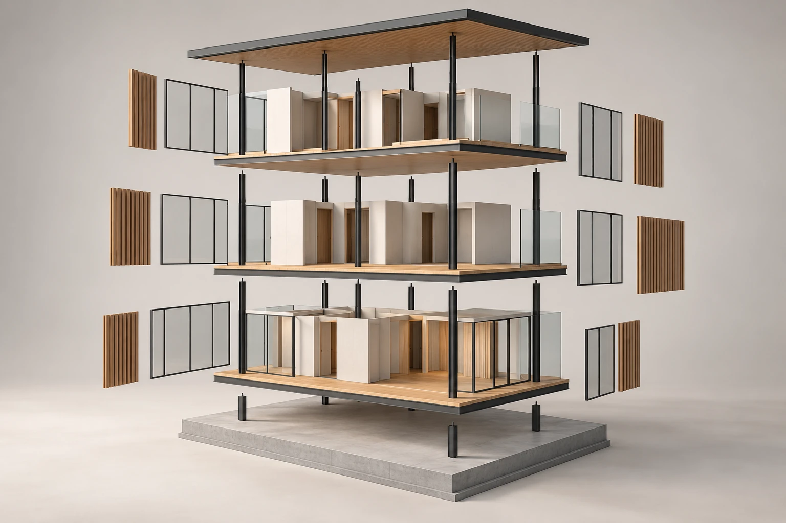

Keep the sources
Hide your originals while you work, then restore their recorded visibility. Remove setup cleans up its generated nodes and restores the sources; Maya Undo brings the setup back.

Exploded views for Maya
Show how it fits together.
Then take it apart.
Select your model, create an exploded view and adjust the space between its parts. Key the amount yourself or build an assembly animation from the panel.

Unfold captures polygon copies of your selected objects at the current frame. The assembled shape stays as your starting point; Amount controls how far the pieces travel.
Choose a model group or its meshes. Use Split disconnected shells when separate parts live inside one combined mesh.
Choose radial spacing or stack along X, Y or Z. Adjust the spread, reverse an axis, or set a custom center.
Pin the parts that should stay still. Give the others their own travel weights, then key or animate the setup.
Copies keep their UVs and share the source materials. A welded mesh remains one piece unless you separate its parts first.


Set a start frame and travel duration. Stagger delays each piece after the one before it, while Hold and Return control the pause and the journey back.
Once created, the animation lives in the Maya scene. You can close the panel and keep scrubbing. Use Key amount for individual poses, or replace the existing Amount keys to rebuild the sequence.
Product internals, mechanical assemblies or an architectural breakdown. Prepare the real parts in your model, then decide how you want them to move.




These are AI concept illustrations, not renders produced by Unfold. Models and example scenes aren't included. Beauty, clay and wireframe are presentation styles you create with your Maya materials and viewport settings.
Hide your originals while you work, then restore their recorded visibility. Remove setup cleans up its generated nodes and restores the sources; Maya Undo brings the setup back.
Pin selected parts at their assembled position. Weight 2 doubles a piece's travel; weight 0 keeps it still. Select in Maya picks the same pieces in the viewport and Outliner.
Keyed Amount follows the timeline. Type a new value and click Key amount to apply it at the current frame. Locked inputs and external drivers are protected from replacement.
Unfold works with polygon objects and disconnected shells. It captures the current deformation; it doesn't copy live source animation, fracture welded geometry or solve collisions.
Unfold 0.2.4 for Autodesk Maya 2026.
The download includes the plugin, Reimagine Fx Tools Installer and a short installation guide.
Download the plugin, bundled installer and two-page PDF guide.
RFX_Installer/install.py into a Maya viewport.Verified in Maya 2026.3.2 on Windows. Polygon geometry only. Make instances unique before capture. Each setup has a 1,000-piece limit; playback speed depends on your scene.
Other Maya versions, operating systems, production render and export workflows haven't been qualified.